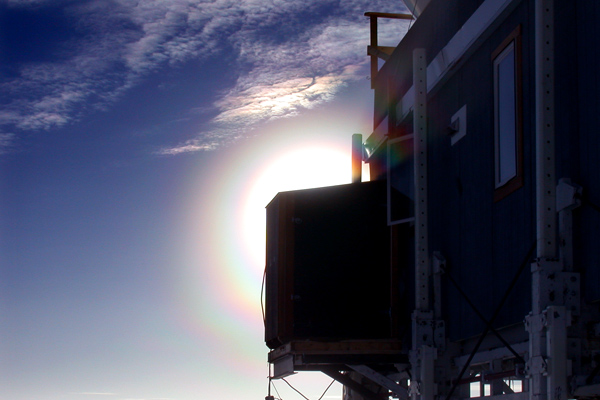

| |<< |< August 9, 2005 >| >>| | |
|
Here we are, last full day at Summit. If all goes according to plan, the LC-130 flight tomorrow will take us, and the robot, back to Kangerlussuaq. It has been a marvelously successful trip. In the two weeks here, we've managed to take a conglomeration of mostly-working subsystems and created a complete system from them. In the last few days, we have demonstrated that the robot can: * Navigate over long distances autonomously, following a GPS course given to it. * Drive over rugged terrain and soft snow, in excess of what we can expect in Antarctica. * Operate on solar power, a significant portion of which comes from reflection off the snow, and drive from this power so long as the sun lasts. * Match the power extracted from the different solar panels to the instantaneous demand. * Tow a sled weighing more than twice its own weight. The data Jim and I have collected during our time here will take quite some time to analyze. Of particular interest to us are the correlations between mobility, the power required to move, and our ability to supply that power from solar power. Keep your eyes open for upcoming publications in the papers section. That data and the the operational experience that we've gathered here will lead to a number of design improvements. Redesigns of both the hardware and software will result in a more robust system, with improved performance, which could be used as a platform for any number of studies of over-snow mobility, autonomous navigation, and photovoltaic control. It can also, of course, be used for its original purpose - as a mobile platform for conducting science in the extreme environments of the Arctic and Antarctic. Not bad for a couple of engineers tinkering over the last two years. Thank you all, and especially to the Summit Camp Staff! updates will continue until we get back stateside --Alex Streeter |
|
|  | |
| More multi-rainbow action, again caused by the fog in the air (which is weird enough in itself, since it was about -15C at the time of this picture) this time it's around the sun, and visible because an outcropping of the big house is masking the sun itself. | |
| |<< |< August 9, 2005 >| >>| |
| [Main] | [Mission] | [Design] | [Science] | [Papers] | [Pictures] | [Team] |
|
Last Updated on 10/20/2005 by Streeter
Site © Thayer School of Engineering, Dartmouth College, Hanover, N.H. |